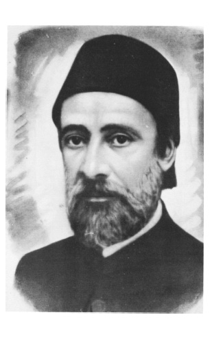

II
Batılılaşma Dönemi Kadroları
Batılılaşmanın kadroları ithal edilebilirdi veya kendi bünyemiz içinde de yetiştirilebilirdi. Osmanlı modernleşmesi kadro yetiştirmeyi ve bunun için okullaşmayı belirli ölçüde başarmıştır ve Cumhuriyet Türkiyesi, bu alanda başarıyla örülen bir miras devralmıştır. Bu özellik sadece Mekteb-i Mülkiye, Mekteb-i Sultanî (Galatasaray) gibi okullarda değil; fen ve tabiî bilim öğreten Baytar Mektebi, Ormancılık Mektebi, Mühendislik ve Tıbbiye gibi okullarda da görülür. Baytar Mektebi’nden iyi baytarlar, hatta beynelmilel literatür ve tatbikata katkıda bulunanlar yetiştiğini pek kimse bilmez; fakat buradan Ziya Gökalp ve Mehmet Akif gibi biri sosyolog, öbürü millî şair iki Türk büyüğünün yetiştiği bilinir. Mehmet Akif bir şair, ama bir edebiyat dehasıdır. Bazı şiirleri tartışmalı olabilir; ama Fars şiirini bütün incelikleri ile bilen, tanıyan ve zevkle öğreten biriydi. Ankara’da mebusluğu sırasında, Sadî ve Hafız derslerini dinlemek için akşamları Tacettin Dergâhı’ndaki odasına mebuslar ve diğer zevat gidiyor ve Sadî ve Hafız şerhleri dinliyorlar.23
Osmanlı memur ve zabiti, mektep yanında geniş bir coğrafyada yetişir. İmparatorluğu iyi bilen bu sınıf, kendisini hükümdarın değil, devlet ve milletin zabiti olarak görmektedir. Darbelerin kaynağını izah eden psikolojik unsur budur. Bu örgütlü ve hareketli sınıf gerçekten de imparatorluğu en iyi bilen kesimdir. Bir zabit bir sene Yemen’de, iki sene Şam’da kalır. Oradan kalkar, Makedonya’nın dağlarında çeteci kovalar, Selanik’te yaşar, İzmir’i görür, Bulgaristan sınırına gider veya Adriyatik kıyısında Draç’ta veya Preveze’dedir. Orada İtalyanı görür, Arnavutu ve Yunanlıyı görür ve gencecik yaşında bir olgun adam olur. Yani daha 30’larını süren bir İsmet Paşa’nın –ki herhalde Türkiye’nin en büyük mareşali değildir; dünyanın en büyük diplomatı değildir; Türk tarihinin herhalde en büyük devlet adamı da o değildir– fakat İsmet Paşa’nın olgun devlet adamlığını ve nadir rastlanan portrelerden birisi olmasını, ancak böyle bir yoğun hayat yaşamasıyla açıklayabilirsiniz. Böyle seçkin kurmayları ve devlet adamlarını ancak bu imparatorluk yetiştirir; çünkü çok genç yaşında olgunlaşan kuşaktandır. Bir sene Yemen’de, iki sene Şam’da, Makedonya’da kalarak lisanlar öğreniyor; kavimleri tanıyor, âdetlerini tanıyor (istese de istemese de) yazışmayı öğreniyor, Babıâli’deki bazı memur ne kadar kapalı kalırsa, bunlar da tersine o kadar renklidir.
Devamlı ateş üstündedirler. Dolayısıyla ciddiyeti öğreniyorlar. Ciddiyeti öğrendikleri zaman, ister Meşrutiyet’te olsun ister Cumhuriyet’te, işleri serinkanlılıkla, sadakatle, kanun fikriyle yürütmeyi öğreniyorlar. O yüzdendir ki belirgin temsilcileri Asım Gündüz, İsmet İnönü veya Cevat Paşa ve Mareşal Fevzi Çakmak olan bu bir kuşak insan, mutlakıyet rejimi içinde doğmuşlar, meşrutiyetin bocalamaları içinde yürümüşler ve cumhuriyetçi tek partiyi en sert bir şekilde yönetmişler, bütün bunlardan sonra demokrasiye de geçebilmişlerdir. Bu çok önemli bir özelliktir. Böyle bir kuşak, ancak Türkiye’de ve Türkiye batılılaşması içinde yetişebilir, bunun üzerinde durmak gerekir. Esasen Tanzimat reformları bürokrasinin eylemidir. Bu kâtip sınıfı, bu bürokratlar, bu askerler, yani devletin memurları, Fransızcayı memuriyetleri icabı kalemde öğrenmişlerdir. O kadar ki Sadrazam Mehmed Emin Âli Paşa bizim tarihimizin en büyük simalarından biridir. Kendisi, Mısır Çarşısı’nın en fakir esnafından birinin oğludur. Babası dükkân kirasına karşılık çarşı kapılarını kapamak zorunda olduğundan, düşmanları Paşa’ya Bevvabzade, Kapıcızade demişlerdir. Mehmed Emin Âli Paşa Fransızcayı kalemde öğrenmiştir. Yani 14 yaşında girdiği Babıâli’de, o kadar iyi Fransızca öğrenmiştir ki, meşhur Fransız edibi Lamartine’in hatıratında şu ibare vardır: “Mehmed Emin Âli Paşa son derece vakur çehreli, fakat kısa boylu bir adam; tabii Fransa’da okuduğu için Fransızcası benimki kadar düzgün.”24 (Hayatında hiç Fransa’ya gitmeden, Fransızcasını tamamıyla Babıâli’de öğrenmiştir). Meselâ, Fuad Paşa Fransızca espriler yapardı, anekdotları Paris ziyaretinde dillerde dolaşmıştır.
Tanzimatçıların içinde Ahmed Vefik Paşa gibi bir adam da var. O, zaten mütercim bir ailede doğmuş (dedesi Bulgarzade Yahya ve babası Ruhiddin Efendi). Yunancası fevkalâde iyi. Fransa’da okuduğu için –Saint-Louis Lisesi’nde– Fransızcası iyi; ama aynı zamanda Arapça ve Farsçası da iyi. Şemseddin Sami var. Hem Arnavutların, hem Türklerin milliyetçisi, iki tarafa da temel eserler hazırlamış, Arnavutçası çok iyi, Türkçesi çok iyi. Yunan lisesinde okuduğundan Rumca biliyordu. Fransızcayı ve İtalyancayı çok iyi biliyordu. Arapça ve Farsça da öğrenmişti. Demek ki böyle cehd içinde (İngilizce tabirle challenge içinde) ve batılılaşma dediğimiz olayın içinde sürüklenen; ama sorumluluklarını yerine getirmiş bir kuşaktır bu. Osmanlı memuru çok lisan bilirdi; ama bunu eğitimli biçimde bilen azdı. Şemseddin Sami iki halkın (Arnavut-Türk) grameri, alfabesi, romanı, tiyatrosu, lûgat ve ansiklopedisini kaleme alan, bu alandaki boşluğu doldurmaya didinen adamlardan biriydi. Osmanlılık nedir? Şemseddin Sami’dir. Bugün Arnavutlar da Türkler de bu adamı hayırla anıyor, millî kültürlerinin temel taşlarından biri olarak ona ulusal anılarında yer veriyorlar.
Batılılaşma ve Siyasal Muhalefet
Bürokrasinin bazı öğelerinin muhalefet yapması, siyasî muhalefetin ve örgütlenmenin iktidar içinde doğmasını kaçınılmaz kılan bir gelişmedir. Bazı yorumcularımız, bu siyasî gelişmeyi memurların, aralarındaki münaferet ve yöneticilerin birbirleriyle rekabeti diye yorumlarlar. Görünüşte böyle bir şey vardır. Meselâ, Ziya Paşa’nın Sadrazam Mehmed Emin Âli Paşa’ya olan düşmanlığı veya Ahmed Cevdet Paşa ve Fuad Paşa çekişmesi buna örnektir; ama bu izah tarzının noksanlığı da şudur: Batı cemiyetinde muhalefet sınıfsal olarak ortaya çıkmıştır. Yani memleketi feodaller, aristokratlar idare ederken, değişen iktisadî düzenle yükselen burjuvazi muhalefeti yürütüyor, onlara karşı muhalefet de sanayileşme sonucu işçilerden çıkıyor gibi kategorizasyonlarla bu gelişmeyi tasvir ederler. Şüphesiz ki bu tip farklılaşma ve tezatları ortaya koymakta fayda vardır. Bu, tarihi safhalara ayırarak teleolojik (gaî) bir yorum yapmak gibidir. Bu gibi kavramlarla tarihe bakmanın ilk anda faydası vardır; yani Voltaire gibi, sonrakiler gibi düşünürseniz dikotomilerle (kutuplaşma) cemiyetleri ve etrafı algılama kolaylaşır; ama yorumlama sorunları da başlar. Bu yorumda, bilhassa yetişen gençliğin zekâsını geliştirme ve metodik düşündürme gibi bir meziyet vardır; ama bu yönteme saplanıp kaldığınız takdirde de değişmeyen hakikatleri veya aksine farklı değişmeleri göremezsiniz ve ortalığı, yönlendirilmiş tarihyazıcılığının yarattığı politik düşünceler sarar.
Şimdi herkesin malûmudur ki Fransız İhtilâli sırasında bir burjuvazi gelişiyor, bir ticaret gelişiyor, bir sanayi gelişiyor. Eski toprak lordlarının dışında, yeni sınıflar çıkıyor; ama dikkat ederseniz siyasî muhalefeti, felsefî muhalefeti yapanlar mutlaka bu sınıflardan değil. Büyük ölçüde yine eski aristokrasinin mensupları bu yeni düşünceleri taşıyor, o kitapları yazıp, okuyorlar. Montesquieu bir burjuva değil, Montesquieu eski aristokrasinin mensubu.
Rousseau’ya belki burjuva diyebiliriz, Cenevre Cumhuriyeti’nin ideolojisinden gelmiştir; ama birtakım adamlar Condorcet’den tutunuz, d’Alambert’e kadar, Diderot’ya kadar eski sınıfların insanları... Talleyrand, ki kendisi bir piskopostur, asildir, eski rejimin adamıydı. Nihayet ihtilâle katıldı ve sonra biliyorsunuz dışişleri bakanlığına kadar geldi. Fransız İhtilâli öncesi okunan kitapları tetkik etmişler; Fransa’da o dönemde burjuvazinin okuduğu kitaplar, Diderot’un ansiklopedisi değil, Montesquieu okumuyorlar, onlar ne okuyorlar biliyor musunuz? Therese Philosophe gibisinden, gayet açık saçık, pornografik romanlar ve kitaplar okuyorlar. Yani yükselen burjuvazi ile birlikte Fransa’da, meselâ artan sayıda pornografik bir neşriyat var; bu tespit edilmiş. Burjuvalar haklıdır. Para kazanmak kolay değil, hayat yorucu, ciddi kitap okuyacak hali yok. İhtilâlciler arasında da aylak sınıf üyeleri mümtaz yerlerini almıştır. Bunun gibi bu teorilerin de her zaman yüzde yüz her şeyi kapsayıcı, geçerli açıklamalar olmadıkları gerçektir. Biz mekteplerde öyle şeyler öğreniriz ki konuya biraz eğilince pek geçerli olmadığı görülür.
Yakın çağımızda ileri-geri kavgasından söz ediyoruz. Bazıları bunu sosyo-ekonomik zümrelere oturtma gayretindeler. Aslında yakınçağ Türk tarihine baktığınız zaman kimin muhafazakâr, kimin devrimci olduğunu tespit etmek de güçtür. Meselâ, “Ahmed Cevdet Paşa muhafazakâr kesimin temsilcisidir” derler. Evet ve hayır... Türk dilindeki sadeleşmenin başını çekenlerdendir, sonra ilginç bir şekilde kadın eşitliğini savunur. Ailesine yazdığı mektuplara bakarsanız25 aile hayatında muhafazakârlıkla hiç alâkası yoktur ve de unutmayın ki Türk tarihinde bildiğimiz kadarıyla 15. asırdan beri feminist kadınlar, başta şaire Mihrî Hanım olmak üzere, hep medrese ulemasının kızlarıdır. İşte Ahmed Cevdet Paşa’nın kızları da öyledir. Fatma Aliye Hanım, bizdeki feministlerin başıdır, öbür kızı Emine Semiyye Hanım da sosyalist parti kurmuştur. Türk hayatını, batılılaşma kalıplarını çok keskin uçlara götürerek mütalaa etmek her zaman aydınlatıcı olmamaktadır; ama şurası da bir gerçektir ki muvafakat kadar muhalefet de aynı sınıfın içinden doğmuştur. Bunlar gazete çıkarmışlardır, bunlar siyasî cemiyet kurmuşlardır, bunlar Paris’e kaçmışlardır, bunlar Paris’ten affedilerek geri dönmüşlerdir. Hepsi aynı sınıfa mensuptur, daha doğrusu bürokrat zümredir. Bürokrasiye de her sosyal kökenden adam girmiştir.

Mehmed Emin Âli Paşa.
Batılılaşmış bürokrasi başarılı bir eğitimden geçer, “Batı tarzı hayat” dediğimiz zaman, kaçınılmaz olarak batılılaşmış eğitim üzerinde durmamız gerekiyor. Eğitimin modernleşmesi sadece Türkiye tarihinde değil, Şark’ın tarihinde de en ilginç olaylardan, gelişmelerden bir tanesidir; çünkü şunu açık söyleyelim, klasik devir “İslâm devri” dediğimiz –Abbasiye devri– ve Orta Asya’da Timurlenk ve onun oğulları Uluğ Bey zamanında süren klasik parlak ilmî gelenek Osmanlı cemiyetinde bitmiştir. Osmanlı dönemi bu klasik ilmî geleneğin parlak olarak devam ettiği, hatta sadece devam edebildiği bir devir değildir. Bununla beraber Osmanlı’da medrese eğitimi çok teşkilâtlı olarak devam eder. Bunun üzerinde durmak lâzım. Evet, artık bu medreselerden Muhammed el-Harezmi (9. asır) çıkmıyor, İbni Sina çıkmıyor, Razî çıkmıyor, İbnürrüşd çıkmıyor, Uluğ Bey çıkmıyor (Ali Kuşçu oradan geldi zaten), Mesudî yok, el-İdrisî yok, İbni Haldun yok; ama ne var? Gayet iyi teşkilâtlanmış bir medrese var. Bunu unutmayalım; bu, bize bir gelenek devredecek. Hangi geleneği devredecek?
Konya’dan Antalya’ya gitmek istediğiniz zaman Akseki’den geçersiniz. Sonra Toroslar’ın sırtında kervan geçmez, kuş uçmaz bir şirin beldecik vardır, İbradı... Akseki ve İbradı, Osmanlı İmparatorluğu’nun beş asır boyunca kadı üretmiş iki beldesi, âdeta kadı fabrikasıdır. Yani gençler o ücra yerlerden medreselere gidebilmektedir, o fakir dağ kasabalarından mevleviyyet pâyeli kadılar, medrese hocaları çıkabilmektedir. İşte burada ilmin, pek çok parlak olmasa da eğitimin teşkilâtlanmasının başarılı olduğu bir toplumla karşı karşıyasınız. Yani dağın başındaki zeki çocukları bürokratik sistemin içine çekebilen gelenek, yeni Türkiye’de de kesintisiz olarak devam etmiştir. Uzak ücra kasabalardan, köylerden birtakım insanlar, geçmişte erkekler, şimdi artık kız çocukları da dahil, okuyorlar, yükseliyorlar, bir yerlere geliyorlar ve doğrudan doğruya Osmanlı batılılaşması gibi Türk batılılaşması da bu özelliği devam ettiriyor. Bu çok önemlidir. Askerî okula en ücra köşedeki insan girebilmiştir. Medreseye eskiden herkes gelebilirdi, derecelerine göre dört tarafta bir eğitim ağı vardı. Bir genç en yakın kasabadan başlayıp yükselebilir, medreseyi bitirebilirdi ve aynı şey sivil okullarda da devam etmiştir. Yani sivil okula, Tıbbiye’ye, Mülkiye’ye, Baytar Mektebi’ne, Orman Mektebi’ne ve muadili mekteplere adımını atarsın, beş kuruş harc verilmesi icab etmez, tam tersine talebenin cebine beş kuruş harçlık koyarlar, giydirirler, kuşatırlar, yedirirler, okuturlar, yetiştirirler. O kadar ki yırtık çarıkla dağdan inen çocuk, önce böyle bir okula gelir temizlenir, giydirilir, sonra okula kaydedilir. Dedeniz yaşındaki eski zabitlere, memurlara biraz sorarsanız, derler ki: “Geldim Trabzon’un bir köyünden, çorabım bile yoktu, Öğretmen Okulu’na veya Kuleli’ye böyle girdim.” Bu sistem çok ilginçtir. Batı’da olmayan bir şeydir ve bununla yine achieve-ment society dediğimiz, liyakata dayanan terfi sistemi, tıpkı eski cemiyetteki gibi devam etmektedir ve dolayısıyla da bu toplumda tıpkı eski Osmanlı sistemi gibi sınıflaşma meydana gelmemektedir. Yani, sadece belirli sınıfların hâkim olduğu ordular; belirli zümreden insanların hâkim olduğu bürokrasiler ortaya çıkmamaktadır. Bu, Osmanlı ve Cumhuriyet Türkiyesi için ortak ve mümtaz bir özelliktir.
Tanzimat’ta her müessese değişmekte; medrese ise gerilemektedir, bütçesi ile, muhtevası ile, mensupları itibariyle gerilemektedir (Tek istisna olan Medresetü’l-Kuzât, o devire uyum sağlayabilmiştir). Artık insanlar yeni açılan okullara, sultanîlere gidiyor, oralardan mezun oluyorlar. Baytar Mektebi’ne, Tıbbiye’ye geliyorlar ve buralara sırf Müslümanlar değil, gayrimüslimler de geliyor. Hatta gayrimüslimlerle devlet arasında ilginç kavgalar vardır.26 Cemaatler, Tıbbiye talebesi olarak Rum cemaatinden şu kadar alınmaktadır, Ermenilere de pay ayrılması veya kontenjanın artırılması diye isyan ediyorlar; çünkü imparatorluk tebaasının üçte biri Hıristiyandır, deniyor; bu nedenle tahminen Tıbbiye’de üçte bir talebe gayrimüslimlerden olacak. Onları da kategorilere ayırdık, şu kadar Rum, şu kadar Ermeni, şu kadar Yahudi, Süryani vs.; aralarında çekişiyorlar, bizim kontenjan az tutulmuş diye. Bu okullardan çıkan insanlar Osmanlı oluyor, aynı eğitimle çıkıyor, aynı dille çıkıyor, aynı ruhla çıkıyor. Bunlar laik bir eğitim görüyor. Vakıa orada Kur’an da okutuluyor, din dersi de var; ama çok kuvvetli olmuyor, o konu ihmal ediliyor. Siz akşamdan sabaha trigonometri çözeceksiniz, kimya yapacaksınız, laboratuvara gideceksiniz, Tıbbiye’deyseniz teşrihhaneye gideceksiniz; o arada da ulema efendilerden biri gelecek, size akaîd-i diniyye ve tefsir-i Kur’an okutacak. Bu iş pek yürümüyor. Gelen efendinin de bütün sınıfı “Bu işi beceremediniz” diye bırakacak hali yok. Onun için bunlar laik okullar oluyor ve din bilgisi az bilinen, az öğrenilen bir dal haline geliyor. Onun yanında öbür gayrimüslim öğrencilere de güya kendi dinleri öğretilecek; ama aynı şekilde, o da öğretilemiyor tabii. Öğretilemeyince bu mekteplere, Müslüman ulema sınıfı gibi, kilise mensupları, hahamlar falan da karşı çıktılar; fakat göze batan husus, mektepliye karşı medreselinin muhalefeti hayatımıza girdi ve bu gerilim bugüne kadar gevşemedi.
Galatasaray’ın kuruluş tarihi 1868’dir.27Tanzimat ricali Mekteb-i Sultanî denen bu okulu niye kurdu? Belli ki yabancı dil eğitimi görmek lâzım. Bu yapılıyor İstanbul’da. Cizvitler, Lazaristler yani Saint George rahipleri, Benediktenler, gelmiş bir sürü okul açmışlar, millet çocuklarını bunlara yolluyor. Tanzimat’ın büyükleri düşünüyor: “Batılılık lâzımsa, onu da biz yapmalıyız.” O zaman Galatasaray kuruluyor. Güzel Türkçe öğreten, Türkiye tarihi öğreten, Türk edebiyatı öğreten ve aynı zamanda da Batı dilini en iyi öğreten yeni bir okul bu. Bunu Tanzimat’ın büyükleri yapmışlar. İtiraf etmek gerekir ki şimdiki Maarif böyle bir panzehir kurum yaratamadı. Biz bu tarz bir okulu, ihtiyaç haline gelen İngilizce eğitim için yapamadık. Kurduğumuz İngilizce eğitim veren üniversitelerin hepsi skandaldır. Ne İngilizceyi o kadar iyi öğreniyor insanlar, ne Türkçeyi iyi öğreniyorlar; bilinen “Türkçe”yi de unutuyorlar. Osmanlı batılılaşması Galatasaray’ı yarattı, biz maalesef İngilizce üzerinden giden Türk batılılaşmasına bir ilaç, panzehir olan mektebi kuramadık. O bakımdan Galatasaray önemli müessesedir ve bu okul kurulduğu zaman, Ermeni patriki, “Gideni aforoz ederim” diyor; Rum patriki aynı tepkiyi gösteriyor; hahamlar benzer davranışta... Onu bırakın, Papa’nın İstanbul’daki temsilcisi bile aynı şeyi söylüyor. Yani “Latin cemaati çocuk yollamasın” diyor; ama bir müddet sonra bakıyorlar ki bu okul çok kuvvetli, herkes oraya gidiyor ve Galatasaray bütün Osmanlı insanlarının, “Türkü kadar Ermenisi, Rumu, Bulgarı, Eflaklısı (Ulah), Romeni, Hıristiyanı, Arabı, Yahudisi ile, Osmanlı Devleti’nin, Osmanlı tebaasının milliyetçiliğini, Osmanlıcılığını taşıyan insanların” yetiştiği bir okul oldu. Bu çok önemli bir şey ve o kadar ki patrikin aforoz etmekle tehdit ettiği okuldan, sonunda bir Ermeni patriki bile çıktı. Ohannes Arşaruni Efendi Galatasaray talebelerindendir. 20. yüzyılın başında Ermeni cemaatinin başına geçmiş,28 Osmanlı Ermenilerinin patriki olmuştur. Demek ki, asrın icabı olan laik eğitim her dalda, hukuk ve mülkiye dalında gelişmekte, teşkilâtlanmakta ve medreseler gerilemeye başlamaktadır. Niye bu laik okullar gelişiyor; sırf teknik yenilenme ihtiyacı nedeniyle mi? Hayır, Osmanlı İmparatorluğu idarî yönden merkezîleşmek ve modernleşmek zorundadır. Yani matematik öğrendiğiniz gibi; cebir, fizik, kimya, tıp öğrendiğiniz gibi, artık modern hukuku, modern iktisadı, modern malî teknikleri öğrenmek zorundasınız. Onun için hukuk ve mülkiye mektepleri açılıyor ve orada çok ilginç bir olay gelişiyor. Hukuk Mektebi maalesef yatılı olarak düzenlenmediği, iyi örgütlenmediği ve de Osmanlı hukuk sistemi asrın icabına göre tamamen Romanize olamadığı için, eski ile yeni yan yana yürümek zorundaydı. Bu yüzden ne oluyor, Medresetü’l-Kuzât, (Kadı Medresesi) Hukuk Mektebi’nden daha iyi teşkilâtlanıyor, yatılı burslu oluyor. Ders programı eklektik biçimde düzenleniyor ve öbürünü geçiyor; çünkü hem İslâm fıkhını, hem Batı hukukunu öğretiyor ve talebeleri yatılı ve burslu olduğundan daha yetenekli ve çalışkan oluyor. Onun için eskilerden sorabilseydiniz: “Medresetü’l- Kuzât Hukuk Mektebi’ne nazaran iyidir” denirdi. Fuat Köprülü girdikten hemen sonra terk etti Hukuk Mektebi’ni: “Beş para etmez” dedi. Tembelliğinden değil, ders disiplini ve müfredatını beğenmediğinden. Mülkiye o zaman Hukuk’tan daha iyi okuldu, niçin? Çünkü maliye öğretiyor, iktisat öğretiyor, hukuku gerekli ölçüde öğretiyor. Yine aynı şekilde, yatılı, burslu beğenilen bir okuldu ve devam etti. Bu çok önemli bir husustur.
Öte yandan Osmanlı medreseleri de tamamen çürümüş değildi. Onun üzerinde duralım. Medreseler bakıyorlar ki asra uymak lâzım; bir kısmı bunların kozmografya, matematik, Fransızca bile öğretmeye başladılar, ders programına koydular. Dolayısıyla İstanbul’da bir çeşitlilik oldu –biz tarihçiler, bunun tarihî portresini henüz tespit edemedik. Medrese var; hakikaten talebesi ekmeğe muhtaç. Talebeler emsile ve binayı okuyup tamamlayamıyor, hiçbir işe yaramıyor, son derece de sefil. (O dönemlerle ilgili meşhur fıkradır: Verdikleri çorbalar artık o kadar yağsız ve etsiz, su gibi bir şeymiş ki, “Efendim, demişler, bu çorbayla abdest bile alınır, caizdir.” Bunun üzerine bir nümayiş yapıyorlar. Padişah Cuma selâmlığından çıkıyor. Alayın iki tarafına dizilmiş medreseliler, bir taraf “yecuzu” diye bağırıyor, öbür taraf “layecuzu” diye bağırıyor. “Yecuzu-caizdir; layecuzu-caiz değildir.” Padişah bu, “yecuzu, layecuzu” sadalarının sebebini soruyor. Diyorlar ki: “Hünkârım, verdikleri çorba o kadar bulaşık suyu gibiymiş ki yağsız, şehriyesiz, etsiz... Bu çorba ile su gibi abdest almak caizdir, yok caiz değildir; ne de olsa adı çorbadır” diyorlar).
19. yüzyılda malî ve ilmî bakımdan kötü olan medreseler de var, fakat bir şeyler öğretmeye çalışanlar da var. Farsça öğretmeye başlayan da var. Bu asırda İstanbul, Farsça eğitimi, edebiyat tetkikleri bakımından o derece ileri gitmiştir ki eskiden beri Şirazlı Hafız ve Şirazlı Sâdî şerhleri çıkmaktayız. İran’da Hafız ve Sâdî gibi büyük şairlerin şerhleri bu kadar çok sayıda değildir; fakat lûgat ve gramer kitapları bol miktarda çıkmaya başlar. Belirttiğimiz gibi Hukuk Mektebi kurulduğuna göre, medreseli yargı görevini kaybetmesin diye “asra biz de uyalım” denmiş ve Medresetü’l-Kuzât kurulmuştu ve bununla Osmanlı medreseleri farklı bir yapıya gidiyordu; çünkü eskiden medresede belirli müfredat var; ama ders programı yoktu. Filân hoca var, ondan ders alınır, ondan icazet alınır, terfi edilirdi; şimdi ders programı koyuyorlar, bizim bugün yaptığımız, sabah 9-12, şu şu derslere girilecek, şu şu hoca gelecek, programa bakarsanız, dersleri görürsünüz.29İslâm fıkhı olduğu gibi, Avrupa hukuku da burada öğretilmektedir. Demek ki 19. asır dünyasının ve imparatorluğun bu döneminin hukukî yapısına, ihtiyaçlarına ilişkin bir hukuk öğretimine, ders öğretimine –sırf dinî İslâmî bilimlerin yanında– medreseler de ayak uydurmaya başlamaktadır. Dolayısıyla batılılaşmanın ihtiyaçları laik eğitim kurumlarını ortaya çıkardığı gibi, medreseleri de sarıyor ve bunun sonucunda eklektik ve düalist kurum tipleri ortaya çıkıyor. Yani bizim anladığımız Efruz Bey tipi, batılılaşmış tip yanında, bir de o eski ulemanın içinde de Batı’ya göre düşünen, ona göre yorum yapan, ona göre kafasını sistematize eden insanlar ortaya çıkmaya başlıyor. Bireylerin ikirciklenmesi kurumlar için de söz konusudur. Bu, Türkiye batılılaşmasının çok ilginç yönlerinden biridir. Zannediyorum bundan sonra batılılaşma ve Batı dediğimiz olayın ikinci bir veçhesini, siyasî veçhesini; yani milliyetçilik akımlarını ele almak durumundayız.
23 Mahir İz, Yılların İzi, Kitabevi Yay., İstanbul, 1990, s. 125.
24 A. Lamartine, Le Nouveau Voyage en Orient, Paris, 1854, s. 49.
25 Mübahat Kütükoğlu, “Cevdet Paşa ve Aile içi Münasebetleri”, Ahmet Cevdet Paşa Semineri, İ.Ü.E.F., İstanbul, 1986.
26 Başbakanlık Osmanlı Arşivi (BOA), I-MV, Nr: 16519, Meclis-i Valâ Mazbatası (12 Ramazan 1273/ 6 Mayıs 1857).
27 Galatasaraylılar pek seviyor tarihlerini uzatmayı –önce 1500’lü yıllara uzattılar, Mülkiyeliler de yapar bunu; biz Enderun’un devamıyız falan derler, bizimkiler de kuruluş yıldönümünü 600’e çıkarırsa şaşırmayın. Siz, Galatasaray’ın eski kütüphanesine, eski eğitimine sahip çıkın, en büyük başarı odur. Yani, o zamanki gibi güzel Türkçe öğretin, güzel Fransızca öğretin. Biz, eski Mülkiye’yi devam ettirelim ne mutlu.
28 Kevork Pamukcuyan, “Ohannes Arşaruni”, İstanbul Ansiklopedisi, c. 2, s. 1063.
29 İlmiyye Salnâmesi, birinci defa, Darü’l-hilâfetü’l-Aliyye, 1334, s. 687 vd., ders programı: (Medresetü’l-Kuzât).